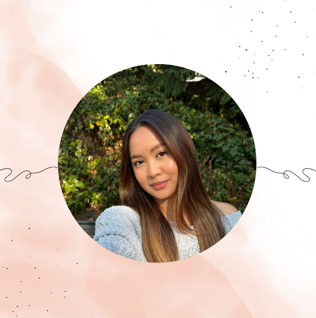

ABOUT US
Hello! We are Seedlings.....
A woman owned small business selling a beautiful selection of plants.

Hi! I'm Angel Abad.
I'm the founder of Seedlings.
I love plants 😊
I was born in the Philippines, and I have six siblings. I have four adorable dogs. I relocated from
California to the Pacific Northwest. I have been in the plant business for six years. This began as a
hobby but quickly evolved into a business. I am always on the lookout for new and unique plants. I enjoy
developing customer relationships. I am also a brand manager and a social media influencer. I am very
active on social media and TikTok.
Seedlings are the result of my love of plants and my desire to help others love plants as well! One of my
absolute favorite aspects of working in this community is meeting amazing plant enthusiasts like you!
Because all of our customers are important, our professional staff is dedicated to making your experience
a pleasant one.